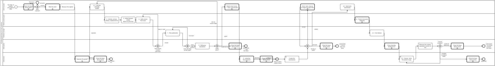

Generated from
cat-harness/processes/kg/kg-separation.bpmnbygen-processes-viz.ts— do not edit here. All processes
Process_KgSeparation · strict · 19 step(s)
Move part of a knowledge graph into repositories of its own: the content and the tools that write and check it separate as a pair, into two repositories, not one. The content (files to read, no code) and its tools (the code that writes and checks it) separate as a pair. kg-separation.md is the practice; this is its order and its gates. Stages 1-3 are graph-detanglement, reused rather than restated.
EVERY GATEWAY IS A COMMAND. Tools closed? is check:tools-closure with the content’s no-code test and a byte-identity check on the generated files; Every identifier its file's path? is check:node-iris; Green alone? is the standalone rehearsal; Ready to seed? is seed:ready --layer <name> --rehearse, decided by decisions/seed-readiness-gate.dmn. A check that could not run stops the process rather than reading as clean.
A PERSON DECIDES FOUR TIMES, AND THE ADMINISTRATOR LANE SAYS WHERE: whether to separate at all, whether to authorise the extraction, creating the repositories, and the cutover. Nothing is committed to the new repositories before they are created, and the parent keeps its own copy until it consumes the first release.
VERSIONS: the pair starts at the content’s version at the split, then each is versioned on its own; a tools release lists the content majors it supports. Worked example: bootstrap and bootstrap-tools (beans r3gy, xsqm). cat-harness and cat-harness-tools follow the same stages.

kg-separation skill without calling this process: A sub-KG is staged in place, then leaves for its own repository — activity-calls-skill-process asks whether each should be a call activity.| lane | role | what it does here |
|---|---|---|
| Authoring agent | authoring-agent |
Briefs, measures the signals, runs declare-detangle-isolate, reports what would move, seeds the repositories once they exist, and adopts each later release. Verification is always by re-running a gate, never by a change looking right. |
| Platform authoring agent | platform-authoring-agent |
The platform-side stages: the graph’s identity (version, iriBase, nodeSchemas), moving harness output about it into the host, splitting the content from its tools, and making the parent consume the pair additively. |
| Publication manager | publication-manager |
Owns where things are published: every identifier the content mints must be a file some step publishes, at / |
| Build pipeline | build-pipeline |
Runs the checks that decide the gateways: the tools’ import closure and the content’s lack of code, node identifiers against file paths, the standalone rehearsal, and dereferencing after release. A gate that cannot tell stops the process; it never reads as clean. |
| Administrator | administrator |
The person’s decisions: whether to separate at all, authorising the extraction, creating the repositories, and the cutover that retires the parent’s copy. An agent reports and waits at each; none of them may be relaxed by a package. |
Every one of the 19 step(s) is documented.
| step | lane | skill / sub-process | what it does |
|---|---|---|---|
Brief, and claim the beanTask_Brief |
Authoring agent | opening-brief |
What is separating and why, what is already measured with its provenance, how it will be done, and what would falsify the approach. Claim the bean so a sibling session sees the work. |
Measure the signalsTask_Measure |
Authoring agent | kg-separation |
Files and bytes per instance, clone cost (bun run cat health), gate time, merge contention, the candidate’s cohesion and cut (kg:detangle), wrong-direction edges, and the would-be tools package’s import cone. Recorded in the bean; none alone is a trigger. |
Separate this graph?Task_Decide |
Administrator | kg-separation |
The owner decides from the measured signals, and also decides the address base for its identifiers, where verdicts about it live, and what its tools repository owns. Declining is a real outcome: the graph stays where it is. |
1–3 · Declare, detangle, isolateTask_Detangle |
Authoring agent | graph-detanglement |
The graph-detanglement practice, all of its gates: declared in place, zero wrong-direction edges on every axis, and standing alone with its own declaration, namespace and artefact. A plain task on purpose, not a call to graph-detanglement.bpmn: that process ends in its own authorise-and-extract steps, which here are stages 9-13 of this one, and calling it would run them twice. |
4 · Identity: version, iriBase, nodeSchemasTask_Identity |
Platform authoring agent | kg-separation |
The declaration carries name, version, iriBase, needs and nodeSchemas. A base move is bun run iri:sync -- --from <old base>, once; then iri:sync:check and check:node-iris are green. |
5 · Move harness output about it to the hostTask_Hosted |
Platform authoring agent | kg-separation |
QA verdicts, translation templates, the exported graph and the glossary ledger are harness output ABOUT the graph: they live with the harness (kgQaHomeFor, translationsHomeFor). The content keeps only what its own checks need; the leak test’s pending list is empty. |
6 · Split content from toolsTask_Split |
Platform authoring agent | kg-separation |
Create |
7 · Plan publicationTask_Plan |
Publication manager | instance-publication |
Every identifier the content mints is a file some step publishes: / |
8 · Rehearse standaloneTask_Rehearse |
Build pipeline | kg-separation |
Copy the content and the tools alone into a temporary directory, with nothing else on the path, and run the tools’ checks there. An empty tree must exit non-zero, so a rehearsal over nothing cannot pass. |
Report what moves — sizes, what breaksTask_Propose |
Authoring agent | deletion-requires-confirmation |
The agent reports and waits: what moves, how large, what in the parent breaks, and the rollback. It never relocates a durable artefact on its own initiative. |
9 · Authorise the extractionTask_Authorise |
Administrator | deletion-requires-confirmation |
A repository cut changes the substrate every other process binds to; that is a person’s decision. Declining leaves the graph declared, detangled, isolated and split in place. |
Create the repositoriesTask_Create |
Administrator | kg-separation |
The owner creates the content and tools repositories and their Pages. Nothing is committed to them before this. |
Drain: land, close or re-target the open PRsTask_Drain |
Authoring agent | kg-separation |
Work the PRs seed:ready named until the source settles: land or close the heavy movers and the next layer’s PRs, bring the layer’s open PRs to five or fewer, and finish any move in flight. Fix a red rehearsal or a discovery miss where it is. Nothing is seeded from here; it goes back to the gateway, which re-asks. |
10 · Seed both repositoriesTask_Seed |
Authoring agent | kg-separation |
Seed main, then bring the content and the tools in as reviewed pull requests with their history, so neither repository’s first commit is unreviewable. |
11 · Parent consumes, additivelyTask_Consume |
Platform authoring agent | calls Adopting an upstream version bumpupstream-version-adoption |
The parent pins the pair (a commit while staging, a version once released) — a code dependency as a source.remote instance in its root index.config.json (remote-mount skill), never a submodule — repoints its imports, and keeps its own copy until it is green with the dependency declared. |
12 · First releaseTask_Release |
Publication manager | package-release |
Tag each repository, publish / |
Every identifier dereferencesTask_Verify |
Build pipeline | calls Verify the export before it is deployedpublish-verification |
After the release is live, every published identifier resolves to the file it names. |
13 · Cutover: retire the parent’s copyTask_Cutover |
Administrator | deletion-requires-confirmation |
The one commit worth reverting, made only after the parent consumes the release and every identifier dereferences. It retires the parent’s copy, frozen, never refreshed and never rendered, rather than deleting it (owner, 2026-10-06). Where the copy goes is the sub-kg-lifecycle skill’s stage 13; this diagram does not name that store, because the published graph must not. |
Measure the cutover: separation:cutover:checkTask_CutoverCheck |
Build pipeline | kg-separation |
Run bun run cat separation:cutover:check --site in the SEPARATED repository (Tool separation-cutover-check). Six conditions, each decided by an existing gate and none assumed: every declared layer mounted at its pin; every path a declaration names resolves (check:declaration-resolution — directories, assets, visualisers, needs); no wiring still names the monorepo (livesAt, a submodule, a reusable workflow, a path into the old checkout — lessons 15 and 16); no import or reference against the layer order; and the site builds from the mounts alone. A finding inside a mounted layer is upstream’s and is listed, not counted. |
Every one of the 5 decision(s) is documented.
| decision | what decides it | branches |
|---|---|---|
Tools closed, content code-free?GW_Closed |
Decided by commands, not judgement: check:tools-closure (no import leaves the tools directory or names an undeclared package), the content’s no-code test (FR-7), and generated files byte-identical before and after the move. Any failure goes back to the split. |
leaks or stale → 6 · Split content from tools closed → 7 · Plan publication |
Every identifier its file’s path?GW_Ids |
Decided by check:node-iris: a published node’s own identifier ($id or @id) under the release address must be its file’s path. A mismatch goes back to the plan: move the file, or change the identifier before it is ever served. |
mismatch → 7 · Plan publication every one matches → 8 · Rehearse standalone |
Green alone?GW_Alone |
Green with nothing else present goes on. Red means an edge the earlier gates did not see, so back to detangling. If the rehearsal could not run, that is not a pass: stop. | red: an unseen edge → 1–3 · Declare, detangle, isolate could not run → UNKNOWN — stop. Not clean green → Report what moves — sizes, what breaks |
Ready to seed?GW_SeedReady |
Asked AT SEED TIME, because the tree has moved since 8 · Rehearse. A seed is a snapshot with no history, so every open PR over the layer when it is taken is orphaned into the monorepo. Computed by decisions/seed-readiness-gate.dmn (hit policy FIRST) from seed:ready --layer <name>: an open heavy-mover PR over the layer or the next one, any open PR on the next layer, more than five over the layer, any that moves a file in it, a red sibling-layout rehearsal, or a direct dependent that discovery cannot find among sibling clones answers not yet. A criterion that could not be decided answers unknown and stops; it never hides a finding already certain, which is why the not yet rows come first. The rehearsal runs only on request (--rehearse, owner ruling 2026-10-02), so without it the answer is never settled. |
not yet → Drain: land, close or re-target the open PRs unknown → UNKNOWN — do not seed. Not clean settled → 10 · Seed both repositories |
Cutover complete?GW_CutoverComplete |
Decided by the exit of separation:cutover:check: 0 every condition measured and passed, 1 a condition failed, 2 one could not be determined or was not run (without --site the answer is never complete). A failure goes back to the cutover with the findings; an undetermined answer stops, because a cutover that could not be shown complete has not been shown complete. |
complete → Separated a condition failed → 13 · Cutover: retire the parent’s copy could not determine → UNKNOWN — not shown complete. Not clean |